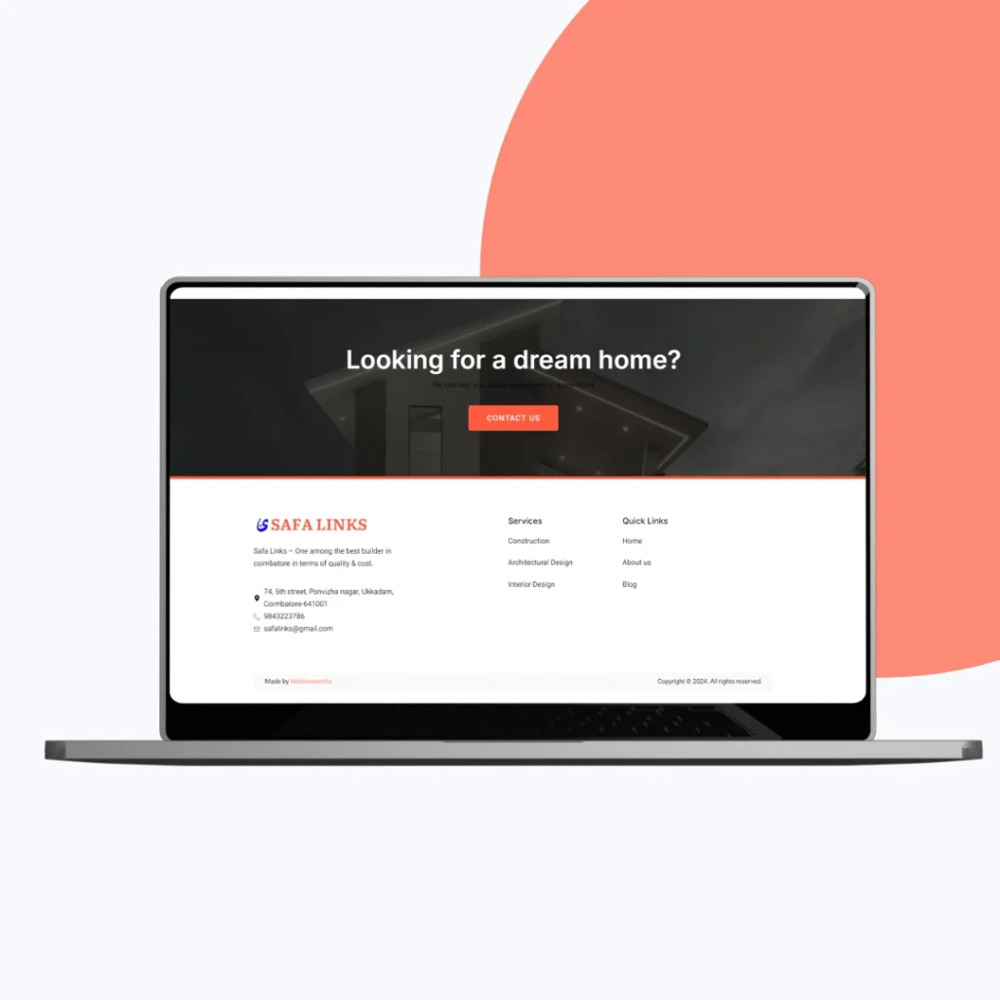

A clean, self-managed website for a 15-year construction and real estate firm.
Safalinks, a construction and real estate company operating in India for over 15 years, had a digital presence that no longer matched its record. I designed the visual identity, UI layout, and responsive web interface for a modern WordPress website that presents its home building, architecture, and interior design services with a clear structure the team can update on its own.

The brief
Safalinks has built homes, architectural solutions, and premium interiors across India for more than 15 years. Its digital presence no longer matched that track record. The company wanted a high-performing, professional website that showcased its construction and design services, worked well on desktop and mobile, supported easy content updates, and came with reliable hosting and ongoing backend support.
I approached it as a web development project rooted in the construction and real estate context: communicate trust first, then make the range of services easy to explore for prospects.


What we built
The site was built on WordPress and Elementor with a clean, modern layout that leads with completed projects, design capabilities, and client testimonials. Modular content blocks give each service a clear place in the hierarchy, and the navigation keeps exploration simple. Media was optimised, caching was integrated, and scripts were tuned for fast loading and mobile responsiveness.
Deployment covered the technical foundation as well: a secure, high-performance server with automated daily backups, 99.9% uptime monitoring, regular updates, and added security layers.


The outcome
Safalinks now has a consistent experience across devices and a structured layout that lets prospects understand its service offerings quickly. The intuitive backend lets the internal team update content, media, and announcements independently, without depending on a developer for every change.
The manager at Safalinks, Fahd, described the result as a clean, minimal website that reflects the brand without clutter, executed with precision and delivered exactly as envisioned.
